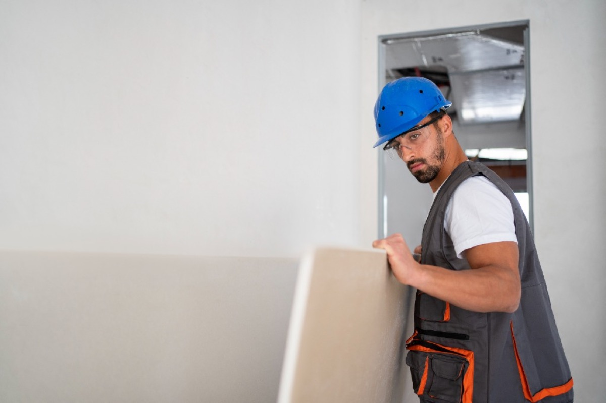

Inicio › Localidades › Nerja
Pintor en Nerja desde 2012 — Hablo español, inglés y árabe
Soy Asis. Llevo desde 2012 pintando casas y haciendo reformas en Nerja y la Costa Tropical Oriental. Trabajo limpio, te doy precio cerrado por escrito antes de empezar, y uso pinturas que aguantan de verdad el salitre y el sol de aquí — no cualquier cosa que se caiga en un año.

En Nerja desde 2012. La costa tiene sus manías — la humedad, la sal, el sol directo. He aprendido qué materiales aguantan aquí y cuáles no. Si algo no queda bien cuando termino, vuelvo y lo arreglo. Eso lo dejo por escrito.
Por qué la gente de Nerja me llama
- ✅ Te hablo en tu idioma: en Nerja hay mucho residente inglés y mucho turista que no se entiende bien con los gremios de aquí. Conmigo lo hablamos en español, inglés o árabe — lo que te venga mejor.
- ✅ El precio que te digo es el que te cobro: nada de "esto era más" ni "eso otro no estaba incluido". Si aparece algo, te llamo antes de tocarlo. Sin sorpresas al final.
- ✅ Aquí la pintura barata no aguanta: el salitre del mar, el sol de la Costa Tropical y la humedad se la comen en poco tiempo. Sé qué pinturas funcionan de verdad en primera línea de playa y cuáles no llegan al segundo año. No te vendo lo más caro, te vendo lo que dura.
- ✅ Dejo la casa como me la encuentro: protejo muebles y suelos, recojo todos los días. Lo digo especialmente para los apartamentos turísticos — sé que no quieres encontrarte polvo ni desorden entre temporadas.
- ✅ Si algo no queda como hablamos, me llamas: me acerco y lo miro. Sin excusas.
- ✅ Hablas conmigo todo el rato: no hay intermediarios, no hay encargados que no saben. Soy yo desde el primer mensaje hasta el último día de obra.
Por dónde me muevo en Nerja
Del Balcón de Europa a Maro, paso por todo. Estos son los sitios donde más trabajos hago:
- 🏛️ Balcón de Europa / Centro de Nerja — apartamentos clásicos y pisos de toda la vida con paredes que llevan muchas capas encima
- 🌿 Capistrano — urbanización muy popular entre residentes ingleses, me llaman bastante para reformas completas
- 🏖️ Burriana — apartamentos cerca de la playa, sobre todo para renovar entre temporadas de alquiler
- 🌊 Torrecilla — pisos de segunda residencia y chalets pequeños, mucho cliente que viene en verano y quiere dejarlo bien
- 🏝️ Maro — casas con carácter, algunas con mucha historia, hay que saber tratar las paredes antiguas
- 🌴 Calahonda — zona tranquila, chalets y casas de campo con fachadas que sufren mucho el sol
- ⛰️ Frigiliana / Torrox Costa — también llego, lo hablo si me escribes
Si tu zona no la ves aquí, llámame igual. No digo que no por estar un poco más lejos.
Lo que más me piden aquí
🎨 Pintura de apartamentos para alquilar
Desde 4€/m². Es lo que más hago en Nerja — gente que tiene su piso o apartamento para alquiler vacacional y necesita dejarlo como nuevo antes de la temporada. Un piso de 70m² lo tengo en 3-5 días, sin que pierdas reservas.
🏢 Fachadas y pintura exterior frente al mar
Desde 6€/m². Con el salitre y el sol directo de Nerja, la pintura barata dura poco. Uso productos específicos para ambientes marinos — y antes de darte precio te explico por qué uno cuesta más que otro y qué diferencia hace en la práctica.
💡 Falsos techos con LED
Desde 50€/m² con luz instalada. Cada vez me lo piden más — cambia una habitación entera sin tocar ni una pared. Limpio, rápido y con acabado que parece más caro de lo que es.
✨ Pintura decorativa y papel pintado
Estuco veneciano desde 18€/m² · papel pintado desde 12€/m². Muchos clientes de Capistrano y Balcón de Europa quieren algo diferente, no solo blanco. Si tienes idea de lo que buscas, lo hablamos; si no, te propongo yo.
🏠 Reformas de baño y cocina enteras
Baño desde 2.000€ · cocina desde 3.000€. Placas de yeso, pintura y acabados — lo llevo todo yo. Así no andas tú coordinando a tres personas distintas que se echan la culpa entre ellas.
"Pero tú vienes desde Granada, ¿no me sale más caro?"
Es lo primero que me preguntan. La respuesta es no, y te explico cómo funciona: cuando tengo obra en Nerja, me quedo varios días seguidos. No hago ida y vuelta cada mañana desde Granada. Si la obra dura 3 días o más, no te cobro nada por el desplazamiento.
Para trabajos muy pequeños (repasar una mano, pintar una habitación suelta), te lo digo antes y vemos si compensa. No te llevas sorpresas al final.
Cómo trabajamos tú y yo
📱 1. Me escribes
WhatsApp, llamada o email — lo que te sea más fácil. Te contesto yo, no nadie en mi nombre. Si estoy en obra, te llamo en cuanto paro.
🚗 2. Me paso por tu casa
Quedamos, miro lo que hay que hacer, medimos y lo hablamos. Es gratis y no te comprometes a nada.
📄 3. Te paso el presupuesto por escrito
Normalmente el mismo día o al siguiente. Te pongo todo: materiales, mano de obra y los días que voy a tardar. Sin letra pequeña. Si te encaja, seguimos. Si no, sin malos rollos.
🔨 4. Empezamos cuando tú me digas
Te marco los días y te aviso si hay cualquier cambio. Si aparece algo no previsto — una humedad, una tubería rara, lo que sea — te llamo antes de tocarlo.
✅ 5. Vemos la obra juntos al acabar
Damos una vuelta por todo. Si hay algo que no te convence, lo arreglo antes de cobrar el final. Siempre.
Pintor en Nerja: lo que me encuentro casi siempre
Nerja no es una ciudad de bloques nuevos. Es mezcla: piso de toda la vida donde vive gente todo el año, apartamento de segunda residencia que se abre dos meses al año y apartamento de alquiler vacacional que no para. Cada uno pide una cosa distinta y el error habitual es tratarlos igual.
En la vivienda antigua lo primero es el gotelé. Muchos pisos del centro lo llevan y encima varias manos de pintura de distintos dueños. Alisar eso no es dar una mano por encima: hay que plastecer, lijar e imprimar bien, y ahí es donde se nota si el que lo hizo tenía prisa. Si te interesa el detalle, lo explico en quitar gotelé y alisar paredes.
En la vivienda cerrada medio año el problema es otro: humedad de condensación. Casa cerrada, sin ventilar, con el mar a un paso — vuelves en junio y te encuentras manchas negras en las esquinas de los dormitorios y detrás de los armarios. Pintar por encima es tirar el dinero, vuelve a salir en el mismo sitio. Primero se seca y se trata, y luego se pinta. Lo mismo pasa en baños sin ventana; tengo escrito cómo lo resuelvo en reparación de humedades.
Y en las fachadas y terrazas manda el sol y la sal. Aquí el poniente pega directo casi todo el día en muchas orientaciones, y la sal en suspensión ataca el paramento. Por eso en exterior no pinto con lo mismo que en un interior de Granada: son productos distintos, con otro precio y otra duración. Desde 6 €/m², y te cuento las dos opciones antes de que decidas — más en pintura de fachadas y exteriores.
Tabiques y falsos techos en Nerja
Las placas de yeso laminado en la costa se usan mucho para tres cosas concretas. Una: separar un salón grande y sacar un dormitorio más, que en un piso de alquiler cambia el precio por noche. Tabique simple desde 25 €/m², doble desde 35 €/m² si quieres que no se oiga al vecino de al lado.
Dos: bajar un techo para esconder instalaciones — el aire acondicionado, los conductos, el cableado — sin picar nada. Falso techo básico desde 30 €/m². Y tres, la que más me piden en apartamentos que se anuncian con fotos: falsos techos con LED desde 50 €/m² con la luz ya instalada. Un salón cambia entero sin tocar una sola pared.
Un aviso honesto sobre las placas en primera línea: en zonas de mucha humedad hay que poner placa hidrófuga, no la normal. Si alguien te da un precio muy bajo, pregúntale qué placa lleva. Yo te lo pongo por escrito en el presupuesto.
Para que te hagas una idea de lo que cuesta
Este es un cálculo orientativo con mis precios de tarifa, no una obra que haya hecho. Sirve para que te hagas el número en la cabeza antes de llamarme. Un apartamento tipo de 65 m² en Nerja, pintura completa más un techo:
- Pintura interior de toda la vivienda a 4 €/m² de superficie a pintar
- Falso techo de placas de yeso en el salón con luz indirecta, a 50 €/m²
- Rodapiés, remates y protección de muebles y suelos
- Suele moverse entre 1.500 € y 2.000 €, y unos 5 días de trabajo
Digo "suele" a propósito. Lo tuyo puede salir por encima o por debajo según cómo estén las paredes, si hay gotelé o humedad y qué materiales elijas. Por eso voy a verlo antes de darte un número, y ese número va por escrito.
Cerca de Nerja también trabajo aquí
Si tienes otra propiedad en la zona, me muevo por toda la costa: pintor y placas de yeso en Almuñécar, Motril y, ya en la Costa del Sol, Torremolinos. Si tienes varios apartamentos que repintar, dímelo de una vez y lo organizamos seguido, que sale mejor para los dos.
Lo que no hago, para no hacerte perder el tiempo
No hago fontanería ni electricidad de obra nueva, no toco estructura y no me meto en trabajos de altura con andamio colgante en edificios altos. Tampoco hago "el pintado rápido de un día" en pisos que necesitan preparación de verdad: prefiero decirte que no antes que dejarte un trabajo que se pela en un año y llevar yo la fama.
📱 Pídeme presupuesto para tu casa en Nerja
WhatsApp / llamada: 633 915 898 — te respondo yo mismo
Email: info@pintareformas.es
Idiomas: Español · English · العربية
Horario: Lun-Vie 8:00-19:00 · Sáb 9:00-14:00
Preguntas que me hacen en Nerja
¿Puedes pintar mi apartamento de Nerja entre dos reservas?
Sí, es lo que más hago aquí. Me dices el hueco que tienes libre y organizo la obra para caber dentro. Un apartamento de 60-70 m² pintado entero me lleva de 3 a 5 días. Si el hueco es de fin de semana, te lo digo claro: hay cosas que no se pueden acelerar sin que se note en el acabado.
¿Qué pintura aguanta el salitre en un piso a pie de playa en Nerja?
En primera línea no vale cualquier plástica barata: el aire salino la levanta en un par de años. Para exteriores e interiores muy expuestos uso pinturas pensadas para ambiente marino, con más resistencia a la humedad y al sol. Cuestan más por bote, pero te ahorran repintar cada dos años. Antes de darte precio te explico las dos opciones y decides tú.
Tengo el piso en Nerja y yo vivo fuera de España, ¿cómo lo hacemos?
Pasa mucho en Nerja. Lo hablamos por WhatsApp en español o en inglés, me dejas llaves con quien tú digas y te voy mandando fotos cada día de cómo va. El presupuesto va por escrito antes de empezar, así sabes exactamente qué se hace y qué cuesta sin estar tú delante.
¿Cuánto cuesta pintar un piso de 70 m² en Nerja?
La pintura interior empieza en 4 €/m² y la premium en 7–9 €/m². Sobre esa base influye el estado de las paredes: si hay gotelé que quitar, humedades que tratar o muchas capas viejas encima, sube. Por eso voy a verlo antes de darte un número, y el número que te doy por escrito es el que cobro.
¿Montas tabiques y falsos techos en Nerja o solo pintas?
Las dos cosas, y por eso me llaman: tabique simple desde 25 €/m², doble desde 35 €/m², falso techo básico desde 30 €/m² y con LED desde 50 €/m². Al hacerlo yo todo no tienes que coordinar a un montador y a un pintor que luego se echan la culpa del remate.
Sobre las reseñas
Te lo digo tal cual: llevo desde 2012 trabajando pero no empecé a pedir reseñas hasta hace poco, así que no tengo muchas todavía en el perfil de Google. Prefiero decírtelo a la cara que ponerte números que no son reales. Cuando terminemos tu obra, si te ha parecido bien, te pediré que dejes la tuya — y si no, también, para saber qué puedo mejorar.
PintaReformas © 2026 | Pintura, tabiques y falsos techos en Nerja
Volver a inicio |
Blog |
FAQ